Characters
Characters Places
Places Stories
Stories Species
Species Organizations
Organizations Glossary
Glossary Transportation
Transportation Monsters
Monsters Jobs
Jobs Summons
Summons Items
Items Magic/Skills
Magic/Skills Weapon Types
Weapon Types In-Crossovers
In-Crossovers Ex-Crossovers
Ex-Crossovers Release Dates
Release Dates Name Origins
Name Origins Famous Moments
Famous Moments Music Database
Music Database Features
Features Game Help
Game Help Game Evolution
Game Evolution Square Art
Square Art Fan Flash
Fan Flash Final Fantasy Forums
Final Fantasy Forums Updates
Updates Site Info
Site Info Feedback
Feedback Full Index
Full Index Links
Links Staff
Staffehr·geiz / n. (German) Ambition.
Ehrgeiz was a fighting game released by Square in 1998, first for arcade, then (with a lot of extra goodies) for PlayStation. It wasn't much of a keeper, but it's famous for having tons of FF7 references and characters. Here's an illustrated rundown. Note that the move list was taken from Cheow Enping's FAQ/Move List on GameFAQs, and was directly translated from Japanese. It is not a complete move list - only the moves that have references to FF7 are listed here. Every single FF7 character uses his/her victory stance from the game, and Sephiroth is the only character who has an ending.
| Cloud Strife
Tifa Lockheart Yuffie Kisaragi Vincent Valentine Sephiroth Django Quest Mode Other Crossovers |
Cloud Strife
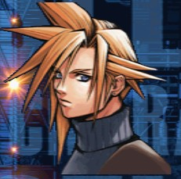
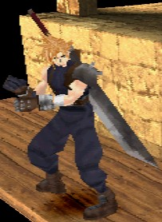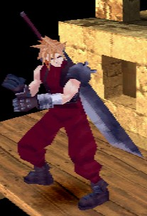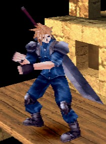
Info: Age: 21 Birthplace: Nibelheim Sex: Male Occupation: Former Soldier, Now ???? Weapon/Special Attack: Buster Sword Birthday: 19th August 1976 Height: 173 cm Blood Type: AB
Availablility: 30 days after installation for ARC, initially available in PSX
Combos: Soldier Jab, Soldier High Low, Soldier Low Kick, Soldier Feint Right, Soldier Feint Left, Soldier Chain, Soldier Chain Disrupt, Soldier Knee, Soldier Elbow, Soldier Hook, Soldier Chain Wheel, Soldier Needle, Soldier Tackle, Shinra Chain K X K, Shinra Chain Genesis, Mako Punch, Air Buster, Deathblow
Just Frame Moves: Zax Chain, Zax Shot, Shinra Chain Alpha, Shinra Chain Beta
Throws: Omnislash
Special Move: (one press) Brings out buster sword to be used in battle, (hold) casts Meteorain
Sword Techniques: Shinra First Slash, Shinra Second Slash, Buster Sword Chain, Sephiroth Combo Incomplete, Rune Blade Chain, Braver, Crosslash, Butterfly Edge, Clim Slash, Clim Hazard, Clim Mirage
Second Outfit: Red Soldier uniform.
Third Outfit: Basic Shinra getup Cloud wore (eventually) during his flashbacks. Unlocked after beating the game with Yuffie.
Other Notes: It's possible to fight Cloud in Arcade mode by beating the first 8 fights under a certain amount of time (in the arcade game, he's referred to as "Guardian" here). Cloud's stage is an elevator (slightly similar to the ones in Junon) and the background music is a remix of FF7's main battle theme.
Tifa Lockheart
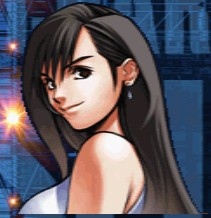
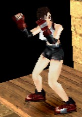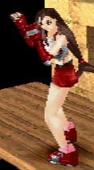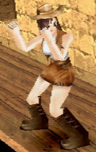
Info: Age: 20 Birthplace: Nibelheim Sex: Female Occupation: Seventh Heaven bar girl, member of AVALANCHE Weapon/Special Attack: Zangan Style Martial Arts Birthday: May 3rd Height: 165 cm Blood Type: B
Availablility: 60 days after installation for ARC, initially available in PSX
Combos: Zangan Style Jab, Zangan Style Middle Kick, Zangan Style Low Kick, Zangan Style ???? Kick, Zangan Style Jump Kick, Zangan Style Sliding, Zangan Style Area Somer, Zangan Combination, Mythril Claw Combo, Double Somersault, Dolphin Blow, Dolphin Blow Real, Middle Somer, Step Somer, Water Kick, Crystal Glove Kick, Circle Kick, Avalanche Tackle, Seventh Heaven, Over Drive, Over Drive Plus, Reverse Sault, Master Fist, Godhand, Metal Knuckle Spin Kick
Just Frame Moves: Zangan Combo Plasma
Throws: Meteor Drive, Somersault Kick, Beat Rush, Moonsault Press, Avalanche Drop, Meteor Strike
Special Move: Final Heaven (throws a slow-moving energy ball), Final Hell, Hell and Heaven, Premium Heart, Platinum Fist, Cure
Second Outfit: Red outfit. (Note: This was actually her original outfit in earlier drafts of FF7)
Third Outfit: The tour guide outfit (what she wore when taking Cloud and Sephiroth to the Nibel Mountains). Unlocked after beating the game with Vincent.
Other Notes: It's possible to fight Tifa in Arcade mode by beating the first 8 fights under a certain amount of time (in the arcade game, she's referred to as "Summoner" here). Tifa's stage resembles a Mako reactor, and her background music is FF7's Prelude.
Yuffie Kisaragi
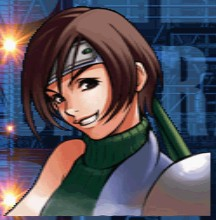
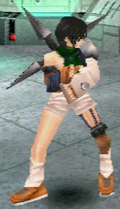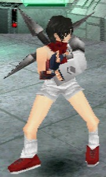
Info: Age: 16 Birthplace: Wutai Sex: Female Occupation: Ninja undergraduate Weapon/Special Attack: Cross Shuriken Birthday: 20 November 1981 Height: 160 cm Blood Type: A
Availablility: Available after beating game with Cloud
Combos: Wutai Style Straight Punch, Joint Mountain, Joint Valley, Dachao Dance, Dachao Offering, Dachao's Wind, Leviathan's Tail, Leviathan's Anger, Leviathan's ????, Not Be A Thousand, Mirror Water (Clear Tranquil), Tidal Wave, Swift Lightning (Greased Lightning)
Just Frame Moves: Five Supreme Skills, The Alive Will Perish (Doom of the Living), Blood Sacrifice (Bloodfest)
Throws: Mega Phoenix Dance
Special Move: Wind Demon Shuriken, Hawkeye, Makibishi, Cutting Wind, Smoke Bomb, Shyu Shyu Shyu
Second Outfit: Red replaces the green in this outfit. (Note: This was actually her original outfit in earlier drafts of FF7)
Other Notes: There might be more moves of her's that refer to FF7, but since they were written in Kanji, translation is difficult.
Vincent Valentine
 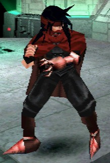 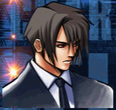 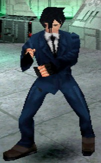
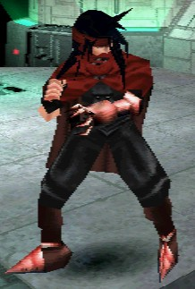 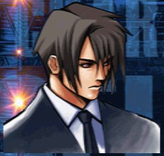 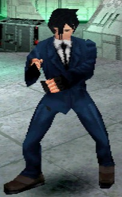
Info: Age: 27 Birthplace: Unknown Sex: Male Occupation: Former Turk Weapon/Special Attack: Shot Barrel Birthday: 13 October 1970 Height: 184 cm Blood Type: A
Availablility: Available after beating game with Tifa
Combos: Turks Jab, Turks Low, Beast Combo, Hell Masker Combo, Splatter Combo, Claw Hook Left, Chaos Saber, Claw Upper Left, Claw Upper Right, Giga Drive, Chopping Arm, Chopping Crusher, Chopping Claw, Wind Kaiser Claw, Sniper CR, Rising Claw, Lightning Kaiser Claw, Beast Claw, Chaos Claw, Hell's Stairway
Just Frame Moves: Satan Impact, Neo Satan Impact, Lucrecia Regret, Claw Hook Right, Chopping Combination
Throws: Giga Dunk
Special Move: Barrel Shot, Double Revolver, Trick Shoot, Hetero Slug (fires three big shots, when they impact, they produce ghost images of Vincent's monster forms)
Second Outfit: His Turks suit. He's the only character who has a separate face pic for the second outfit.
Sephiroth
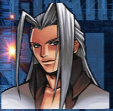
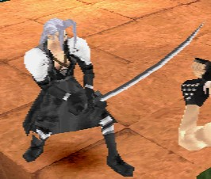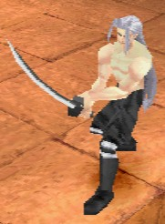
Info:Age: Unknown Birthplace: Unknown Sex: Male Occupation: Legendary soldier Weapon/Special Attack: Masamune
Availablility: Initially available
Combos: Jenova Linkage BIRTH, Jenova Linkage SYNTHESIS, Jenova Linkage DEATH, Jenova Attack, Jenova Shoot, Jenova Reppa
Just Frame Moves: Jenova Linkage Life, Jenova Linkage Incomplete, Playing Reunion, Desperado Edge, Jenova Rush, Duo Fantasy, Sephiroth Combo
Throws: Tragic End
Special Move: (one press) Brings out masamune, (hold) Black Materia (note: this is the same as Cloud's Meteorain)
Sword Techniques: Sephiroth Combo Complete
Second Outfit: Bare chest, what he wears in the very last fight of FF7.
Other Notes: Sephiroth is the only character with an ending. It's basically a montage of scenes from full motion video sequences in FF7 (in fact, there seems to be a bit from almost every scene) set to a slight remix of One Winged Angel.
Zack
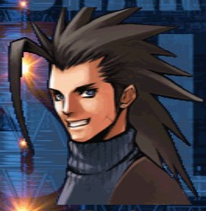
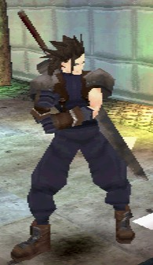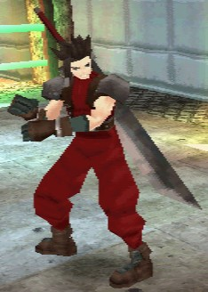
Info: Age: Unknown Birthplace: Gongaga Sex: Male Occupation: Soldier First Weapon/Special Attack: Buster Sword
Availablility: Available after beating the game with Cloud, Tifa, Yuffie, Vincent, and Sephiroth
Combos: Zax Chain Disrupt, Zax Chain K X K, Zax Chain Wheel, Zax Chain Genesis, Gongaga Attack, Mako Straight, Air Anchor, Slide Buster, Gongaga Low, Deathblow
Just Frame Moves: True Zax Chain, True Zax Shot, Zax Chain Alpha, Zax Chain Beta
Throws: Meteo Drop, Gongaga ????, Omnislash
Special Move: (one press) Brings out buster sword, (hold) Meteo Shower (note: this is the same as Cloud's Meteorain)
Sword Techniques: Mythril Saber Chain, Ogre Nix, High Braver, True Crosslash, Crystal Sword, Clim Slash, Clim Hazard, Clim Mirage
Second Outfit: Red outfit.
Other Notes: Zack is essentially just a palette-swapped Cloud.
Django
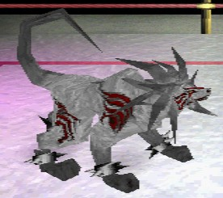 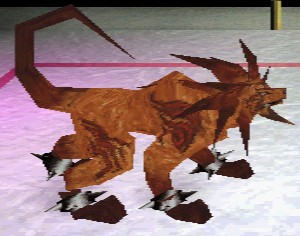
Info:Age: Unknown Birthplace: Unknown Sex: Unknown Occupation: Unknown Weapon/Special Attack: Flare
Availablility: 90 days after installation for ARC, initially in PSX after beating the game with all 8 original characters
Combos: Seto Punch, Seto Low Punch, Seto Combination, Nanaki Kick, Nanaki Combination, Titan Header, Chocobo Kick, Bahamut Kick, Ifrit Bite, Hades Bite, Shiva Attack, Sled Fang, Chupon Brush, Blood Fang, Phoenix Roll
Throws: Biting Bahamut Zero
Special Move: Mega Flare, Giga Flare, Knight Round Rolling
Second Outfit: Red fur!
Other Notes: Although Django is the second to last fight, he is the "real" final boss of Ehrgeiz (the next battle doesn't have to be won). His normal form is gray and has nothing to do with FF7, but in his second outfit, he looks remarkably like a recolored Red XIII (and his moves reflect this). However, neither his appearance nor his victory stance are exactly like Red XIII's (they're very similar though), so it is generally thought this might be either an alternative Red XIII or a member of the same species. Ehrgeiz doesn't exactly have much story, so it's hard to tell.
Quest Mode
The PSX version of Ehrgeiz has an added "quest mode" which follows Koji Masuda, the previous winner of the Ehrgeiz Tournament, as he explores a ruin. It's a kind of RPG-action-fighting thingy, like a predecessor to Dark Cloud. The monsters are fairly run-of-the-mill, but the equipment is all FF, all the time. Observe!
- Items: Potion, Hi-Potion, X-Potion, Phoenix Down
- Materia: Fire, Ice, Thunder, Freeze, Quake, Trine (enemy ability), Meteor, Flare, Ultima, Holy
- Gloves: Crystal Knuckle, Diamond Knuckle, Dragon Claw, Kaiser Knuckle, Master Fist, Motor Drive, Mythril Knuckle, Power Soul, Premium Heart, Tiger Fang
- Rods: Aurora Rod, Crystal Rod, Diamond Rod, Fairy Tail, Full Metal Staff, Guard Stick, Mythril Rod, Princess Guard, Prism Staff, Sage's Rod, Striking Staff, Wizard Staff
- Daggers: Assassin Dagger, Orihalcon
- Swords: Blood Sword, Broad Sword, Crystal Sword, Diamond Sword, Enhanced Sword (Enhancer), Gradius Sword, Long Sword, Mythril Sword, Rune Blade, Excalibur, Ragnarok, Ultima Weapon, Zweihander
- Katanas: Heaven's Cloud, Masamune, Murasame, Muramasa, Kikuichimonji, Kotetsu, Sasuke's Katana, Yoshiyuki
- Spears: Diamond Spear, Dragoon Lance, Javelin, Crystal Spear, Glaive, Halberd, Holy Lance, Mythril Spear, Partisan, Spirit Lance, Trident, Venus Gospel
- Axes: Battle Axe, Crescent Axe, Crystal Axe, Diamond Axe, Ogre Killer
- Armor: Adamantite Armor, Brigandine, Crystal Armor, Diamond Armor, Mythril Armor
- Shields: Aegis Shield, Bucklet, Crystal Shield, Diamond Shield, Mythril Shield
- Helmets: Crystal Helmet, Diamond Helmet
Other Crossovers
Final Fantasy, all games and animation bearing the Final Fantasy name, and all characters in said games or animation are copyright their respective creators, including but not limited to Squaresoft, Square Enix, Square EA, Tokyo TV, and ADV Films.